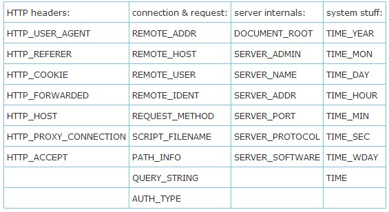

日志

RewriteCond 和RewriteRule
文章分类:Web前端
Apache的Mod_rewrite学习 (RewriteCond重写规则的条件)收藏
RewriteCond Syntax: RewriteCond TestString CondPattern [flags] RewriteCond指令定义一条规则条件。在一条RewriteRule指令前面可能会有一条或多条RewriteCond指令，只有当自身的模板(pattern)匹配成功且这些条件也满足时规则才被应用于当前URL处理。 TestString是一个字符串，除了包含普通的字符外，还可以包括下列的可扩展结构：
1. $N,RewriteRule后向引用，其中(0 <= N <= 9) $N引用紧跟在RewriteCond后面的RewriteRule中模板中的括号中的模板在当前URL中匹配的数据。
2. %N,RewriteCond后向引用，其中(0 <= N <= 9) %N引用最后一个RewriteCond的模板中的括号中的模板在当前URL中匹配的数据。
3. ${mapname:key|default},RewriteMap扩展. 具体参见RewriteMap
4. %{ NAME_OF_VARIABLE } ,服务器变量。 变量的名字如下表（分类显示）

5.
6. 特别说明：
o SCRIPT_FILENAME和REQUEST_FILENAME变量含有相同的值，也就是Apache服务器内部数据结构request_rec的 filename字段的值。第一个变量是一个CGI变量，而第二个则与REQUEST_URI(含有request_rec数据结构中uri字段的值)保持一致。
o %{ENV:variable}中的variable可以是任何环境变量的名字。对其值的查找，先通过Apache内部的数据结构，（如找不到）再在Apache服务器进程中通过getenv()查找。
o %{HTTP:header}中的header可以是任何HTTP MIME-header的名字，其值通过查找HTTP请求信息而得。
o %{LA-U:variable} 用来引用后续API阶段中定义的、当前还不知道的值，具体实现是通过执行一个基于URL的内部的sub-request来决定的variable的最终的值。例如，假如你想在服务器范围内利用REMOTE_USER的值来完成重写，但这个值是在验证阶段设置的，而验证阶段是在URL转换阶段的后面。从另一方面讲，由于mod_rewrite在修补(fixup)API阶段进行目录范围的重写，而修补阶段在验证阶段的后面，所以此时只要用% {REMOTE_USER}就可以取得该值了。
o %{LA-F:variable}，执行一个基于文件名字(filename)的内部sub-request来决定variable的最终的值。大多数时间内，这和LA-U相同。
CondPattern是一个条件模板，也就是说，是一个扩展正则式（extended regular expression），用与跟TestString进行匹配。作为一个标准的扩展正则式，CondPattern有以下补充：
1. 可以在模板串前增加一个!前缀，以用表示不匹配模板。但并不是所有的test都可以加！前缀。
2. CondPattern中可以使用以下特殊变量：
o '<CONDPATTERN' (小于，基于字母顺序) 将condPattern当作一个普通字符串，将它和TestString进行比较，当TestString 的字符小于CondPattern为真.
o '>CondPattern' (大于) 将condPattern当作一个普通字符串，将它和TestString进行比较，当TestString 的字符大于CondPattern为真.
o '=CondPattern' (等于) 将condPattern当作一个普通字符串，将它和TestString进行比较，当TestString 与CondPattern完全相同时为真.如果CondPattern只是 "" (两个引号紧挨在一起) 此时需TestString 为空字符串方为真.
o '-d' (是否为目录) 将testString当作一个目录名，检查它是否存在以及是否是一个目录.
o '-f' (是否是regular file) 将testString当作一个文件名，检查它是否存在以及是否是一个regular文件.
o '-s' (是否为长度不为0的regular文件) 将testString当作一个文件名，检查它是否存在以及是否是一个长度大于0的regular文件
o '-l' (是否为symbolic link) 将testString当作一个文件名，检查它是否存在以及是否是一个 symbolic link.
o '-F' (通过subrequest来检查某文件是否可访问) 检查TestString是否是一个合法的文件，而且通过服务器范围内的当前设置的访问控制进行访问。这个检查是通过一个内部subrequest完成的, 因此需要小心使用这个功能以降低服务器的性能。
o '-U' (通过subrequest来检查某个URL是否存在) 检查TestString是否是一个合法的URL，而且通过服务器范围内的当前设置的访问控制进行访问。这个检查是通过一个内部subrequest完成的, 因此需要小心使用这个功能以降低服务器的性能。
[flags]是第三个参数，多个标志之间用逗号分隔。
1. 'nocase|NC' (不区分大小写) 在扩展后的TestString和CondPattern中，比较时不区分文本的大小写。注意，这个标志对文件系统和subrequest检查没有影响.
2. 'ornext|OR' (建立与下一个条件的或的关系) 默认的情况下，二个条件之间是AND的关系，用这个标志将关系改为OR。例如： RewriteCond %{REMOTE_HOST} ^host1.* [OR] RewriteCond %{REMOTE_HOST} ^host2.* [OR] RewriteCond %{REMOTE_HOST} ^host3.* RewriteRule ... 如果没有[OR]标志，需要写三个条件/规则.
例子：根据客户端浏览器的不同，返回不同的首页面。 RewriteCond %{HTTP_USER_AGENT} ^Mozilla.* RewriteRule ^/$ /homepage.max.html [L] RewriteCond %{HTTP_USER_AGENT} ^Lynx.* RewriteRule ^/$ /homepage.min.html [L] RewriteRule ^/$ /homepage.std.html [L]
当你在地址栏里输入 sina.com.cn google.cn
看看有什么变化？是不是会自动跳转到 www.sina.com.cn www.google.cn
这一技术通过apache的rewrite可以实现，当然你得把 不带www的域名指向你服务器的IP
要是虚拟主机的话，得在viralhost段加入 ServerAlias xxx.com
然后打开重写引擎功能
RewriteEngine On
能过rewritecond判断主机名是否带www
RewriteCond %{HTTP_HOST} ^xxx\.com$ [NC]
然后来一条
RewriteRule ^/(.*)$ http://www.xxx.com/$1 [R=301,L]
OK,重起apache，现在在浏览器中输入 xxx.com 看看是不是自动变成了 www.xxx.com 了呢。
重新整理一下就是：
RewriteEngine On
RewriteCond %{HTTP_HOST} ^xxx\.com$ [NC]
RewriteRule ^/(.*)$ http://www.xxx.com/$1 [R=301,L]
源地址: http://blog.csdn.net/keyunq/archive/2008/06/11/2536875.aspx
一 .RewriteRule
Syntax: RewriteRule Pattern Substitution [flags]
一条RewriteRule指令，定义一条重写规则，规则间的顺序非常重要。对Apache1.2及以后的版本，模板(pattern)是一个POSIX正则式，用以匹配当前的URL。当前的URL不一定是用记最初提交的URL，因为可能用一些规则在此规则前已经对URL进行了处理。
对mod_rewrite来说，！是个合法的模板前缀，表示“非”的意思，这对描述“不满足某种匹配条件”的情况非常方便，或用作最后一条默认规则。当使用！时，不能在模板中有分组的通配符，也不能做后向引用。
当匹配成功后，Substitution会被用来替换相应的匹配，它除了可以是普通的字符串以外，还可以包括：
1. $N,引用RewriteRule模板中匹配的 相关 字串，N表示序号,N=0..9
2. %N,引用最后一个RewriteCond模板中匹配的数据，N表示序号
3. %{VARNAME},服务器变量
4. ${mapname:key|default},映射函数调用
这些特殊内容的扩展，按上述顺序进行。
一个URL的全部相关部分都会被Substitution替换，而且这个替换过程会一直持续到所有的规则都被执行完，除非明确地用L标志中断处理过程。
当susbstitution有”-”前缀时，表示不进行替换，只做匹配检查。
利用RewriteRule，可定义含有请求串(Query String)的URL，此时只需在Sustitution中加入一个？，表示此后的内容放入QUERY_STRING变量中。如果要清空一个 QUERY_STRING变量，只需要以？结束Substitution串即可。
如果给一个Substitution增加一个
1. 'redirect|R [=code]' (强制重定向)
给当前的URI增加前缀
2. 'forbidden|F' (强制禁止访问URL所指的资源)
立即返回状态值403 (FORBIDDEN)的应答包。将这个标志与合适的RewriteConds 联合使用，可以阻断访问某些URL。
3. 'gone|G' (强制返回URL所指资源为不存在(gone))
立即返回状态值410 (GONE)的应答包。用这个标志来标记URL所指的资源永久消失了.
4. # 'proxy|P' (强制将当前URL送往代理模块（proxy module）)
这个标志，强制将substitution当作一个发向代理模块的请求，并立即将共送往代理模块。因此，必须确保substitution串是一个合法的URI (如, 典型的情况是以
5. 'last|L' (最后一条规则)
中止重写流程，不再对当前URL施加更多的重写规则。这相当于perl的last命令或C的break命令。
6. 'next|N' (下一轮)
重新从第一条重写规则开始执行重写过程，新开的过程中的URL不应当与最初的URL相同。 这相当于Perl的next命令或C的continue命令. 千万小心不要产生死循环。
7. # 'chain|C' (将当前的规则与其后续规则綑绑(chained))
当规则匹配时，处理过程与没有綑绑一样；如果规则不匹配，则綑绑在一起的后续规则也不在检查和执行。
8. 'type|T=MIME-type' (强制MIME类型)
强制将目标文件的MIME-type为某MIME类型。例如，这可用来模仿mod_alias模块对某目录的ScriptAlias指定，通过强制将该目录下的所有文件的类型改为 “application/x-httpd-cgi”.
9. 'nosubreq|NS' (used only if no internal sub-request )
这个标志强制重写引擎跳过为内部sub-request的重写规则.例如，当mod_include试图找到某一目录下的默认文件时 (index.xxx)，sub-requests 会在Apache内部发生. Sub-requests并非总是有用的，在某些情况下如果整个规则集施加到它上面，会产生错误。利用这个标志可排除执行一些规则。
10. 'nocase|NC' (模板不区分大小写)
这个标志会使得模板匹配当前URL时忽略大小写的差别。
11. 'qsappend|QSA' (追加请求串(query string))
这个标志，强制重写引擎为Substitution的请求串追加一部分串，则不是替换掉原来的。借助这个标志，可以使用一个重写规则给请求串增加更多的数据。
12. 'noescape|NE' (不对输出结果中的特殊字符进行转义处理)
通常情况下，mod_write的输出结果中，特殊字符（如'%', '$', ';', 等)会转义为它们的16进制形式(如分别为'%25', '%24', and '%3B'）。这个标志会禁止mod_rewrite对输出结果进行此类操作。 这个标志只能在 Apache 1.3.20及以后的版本中使用。
13. 'passthrough|PT' (通过下一个处理器)
这个标志强制重写引擎用filename字段的值来替换内部request_rec数据结构中uri字段的值。. 使用这个标志，可以使后续的其它URI－to-filename转换器的Alias、ScriptAlias、Redirect等指令，也能正常处理 RewriteRule指令的输出结果。用一个小例子来说明它的语义：如果要用mod_rewrite的重写引擎将/abc转换为/def,然后用 mod_alas将/def重写为ghi，则要：
RewriteRule ^/abc(.*) /def$1 [PT]
Alias /def /ghi
如果PT标志被忽略，则mod_rewrite也能很好完成工作,如果., 将 uri=/abc/... 转换为filename=/def/... ，完全符合一个URI-to-filename转换器的动作。接下来 mod_alias 试图做 URI-to-filename 转换时就会出问题。
注意:如果要混合都含有URL－to-filename转换器的不同的模块的指令，必须用这个标志。最典型的例子是mod_alias和mod_rewrite的使用。
14. 'skip|S=num' (跳过后面的num个规则)
当前规则匹配时，强制重写引擎跳过后续的num个规则。用这个可以来模仿if-then-else结构：then子句的最后一条rule的标志是skip=N，而N是else子句的规则条数。
15. 'env|E=VAR:VAL' (设置环境变量)
设置名为VAR的环境变量的值为VAL,其中VAL中可以含有正则式的后向引用($N或%N)。这个标志可以使用多次，以设置多个环境变量。这儿设置的变量，可以在多种情况下被引用，如在XSSI或CGI中。另外，也可以在RewriteCond模板中以%{ENV:VAR}的形式被引用。
16.
注意：一定不要忘记，在服务器范围内的配置文件中，模板(pattern)用以匹配整个URL;而在目录范围内的配置文件中，目录前缀总是被自动去掉后再进行模板匹配的，且在替换完成后自动再加上这个前缀。这个功能对很多种类的重写是非常重要的，因为如果没有去前缀，则要进行父目录的匹配，而父目录的信息并不是总能得到的。一个例外是，当substitution中有http://打头时，则不再自动增加前缀了，如果P标志出现，则会强制转向代理。
注意：如果要在某个目录范围内启动重写引擎，则需要在相应的目录配置文件中设置“RewriteEngine on”，且目录的“Options FollowSymLinks”必须设置。如果管理员由于安全原因没有打开FollowSymLinks，则不能使用重写引擎。
http://hostname 开头)，否则会从代理模块得到一个错误. 这个标志，是ProxyPass指令的一个更强劲的实现，将远程请求(remote stuff)映射到本地服务器的名字空间(namespace)中来。
注意，使用这个功能必须确保代理模块已经编译到Apache 服务器程序中了. 可以用“httpd -l ”命令，来检查输出中是否含有mod_proxy.c来确认一下。如果没有，而又需要使用这个功能，则需要重新编译``httpd''程序并使用 mod_proxy有效。 http://thishost[:thisport]/ ，从而生成一个新的URL，强制生成一个外部重定向(external redirection，指生的URL发送到客户端，由客户端再次以新的URL发出请求，虽然新URL仍指向当前的服务器). 如果没有指定的code值，则HTTP应答以状态值302 (MOVED TEMPORARILY)，如果想使用300-400（不含400）间的其它值可以通过在code的位置以相应的数字指定，也可以用标志名指定： temp (默认值), permanent, seeother.
注意，当使用这个标志时，要确实substitution是个合法的URL，这个标志只是在URL前增加http://thishost[:thisport]/ 前缀而已，重写操作会继续进行。如果要立即将新URL重定向，用L标志来中重写流程。 http://thishost[:port ]的前缀，则mod_rewrite会自动将此前缀去掉。因此，利用 http://thisthost 做一个无条件的重定向到自己，将难以奏效。要实现这种效果，必须使用R标志。
Flags是可选参数，当有多个标志同时出现时，彼此间以逗号分隔。

历史上的今天
- netshell.dll注册失败，返回代码是：0X80020009 - 网络管理 - 512011-07-24 16:54:27
- 【分享】闲聊cisco工程师角色扮演游戏--Aspire - 思科技术 - 51C2011-07-24 15:35:27
- Telnet 入门手册2011-07-24 15:04:24
- 如何对txt文件进行批处理,想删除单行？_百度知道2011-07-24 14:44:24

评论